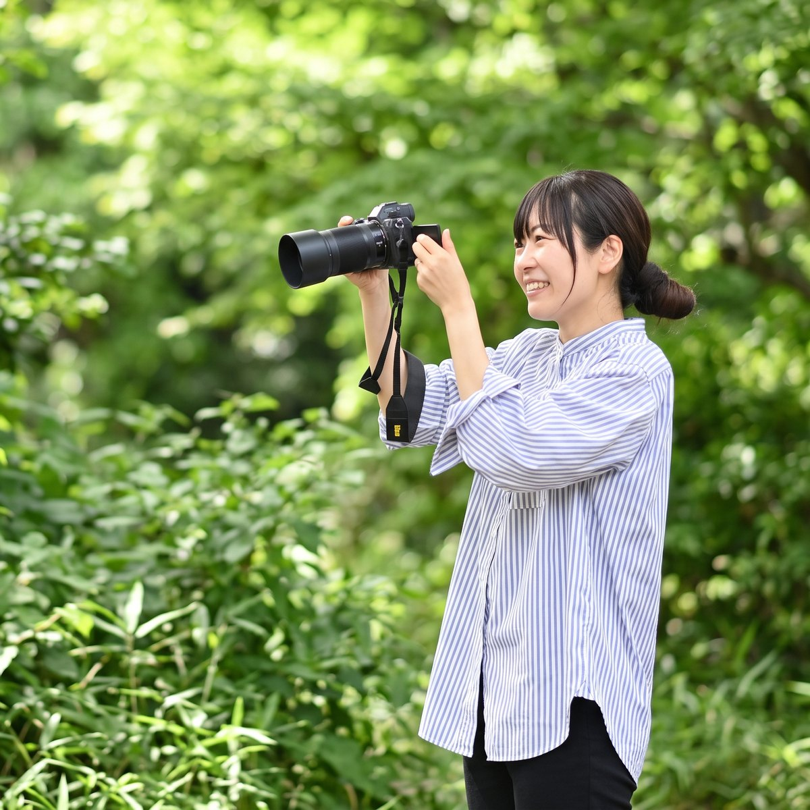

ABOUT
いち日写真館について
出張撮影を続ける中で、たくさんのご家族と出会ってきました。
そして、ありがたいことに、「また来年もお願いします」と、毎年撮影をご依頼くださるご家族も少しずつ増えていきました。
お子さんの成長を一緒に見守るように、家族の時間を記録させてもらえることが、とても嬉しく、大切な時間になっています。
そんな中で、「この関係が、ずっと続いていけばいいな」と思うようになりました。
もちろん、私がご家族のもとへ伺う出張撮影も大好きです。
でもいつか、大きく成長した子どもたちが、
「久しぶりに遊びに来たよ」
と、ふらっと立ち寄ってくれるような、
そんな写真館を作れたらいいなと思うようになりました。
その一歩として、東京都内で、1日だけ場所を借りながら開催する、
"移動型の写真館" として「いち日写真館」をスタートしました。
その後、私の生まれ育った富山にも、小さな真っ白な空間「いち日写真館｜富山」を作りました。
帰省する時にしか開けられない小さな写真館ですが、それでも、かつての友人や親戚、そのご紹介などを通して、毎回たくさんのご家族が遊びに来てくださっています。
現在、東京では店舗を持たず、出張撮影を中心に活動しています。
けれどいつか、「いち日写真館｜東京」として、家族がふらっと遊びに来られるような場所を作ることが、ひとつの夢です。
何気なく過ぎていく毎日も、
あとから振り返れば、かけがえのない時間になります。
子どもの仕草。
家族の会話。
その時、その場所に流れていた空気。
写真には、
未来の自分たちを支えてくれる力があると感じています。
いち日いち日が、この家族の全部になる。
そんな思いで、今日の時間を記録しています。
PHOTOGRAPHER
カメラマン紹介

松田 恵美
Matsuda Megumi
富山県出身富山育ち。富山の大学で環境工学を4年間学んだのち、富山の薬品会社に就職。
旅先で訪れたカンボジアの風景に感動したこと、友人の結婚式でコンパクトデジカメで撮った写真をプレゼントして喜ばれたこと。そうした写真への魅力が重なり、2008年に写真を学ぶため上京。クオリティーフォトスクールに入校し、現在もOGとして在学中。
2010年よりプロのフォトグラファーとして活動開始。ウェディング・家族写真・七五三・成人式などのロケーション撮影を中心に、企業撮影・スクールフォト・イベント撮影・動画撮影など幅広いジャンルで活動。
2018年に長男、2023年に次男を出産。現在は東京・富山の2拠点を中心に出張撮影を行っています。
日々の暮らしや、自分の家族の記録、写真について感じていることなどを、noteにも綴っています。
noteはこちらFOR BUSINESS
ビジネスフォトのご依頼は
hito&hito へ
プロフィール写真・スタッフ撮影・商品撮影など、
ビジネス向けの撮影は姉妹サイト hito&hito にて承っています。